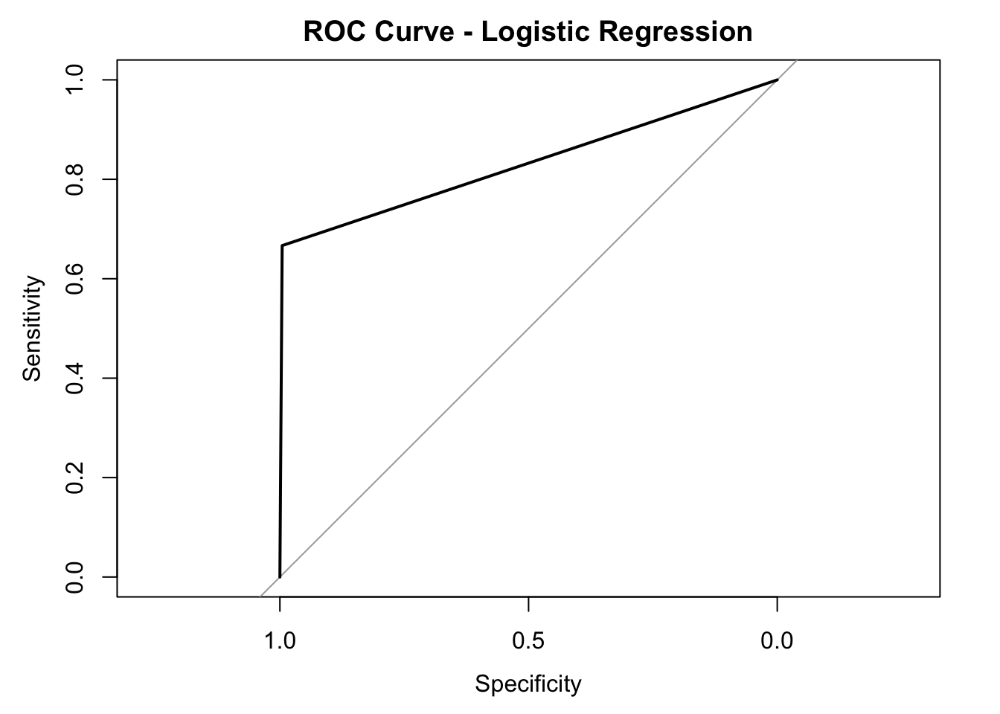
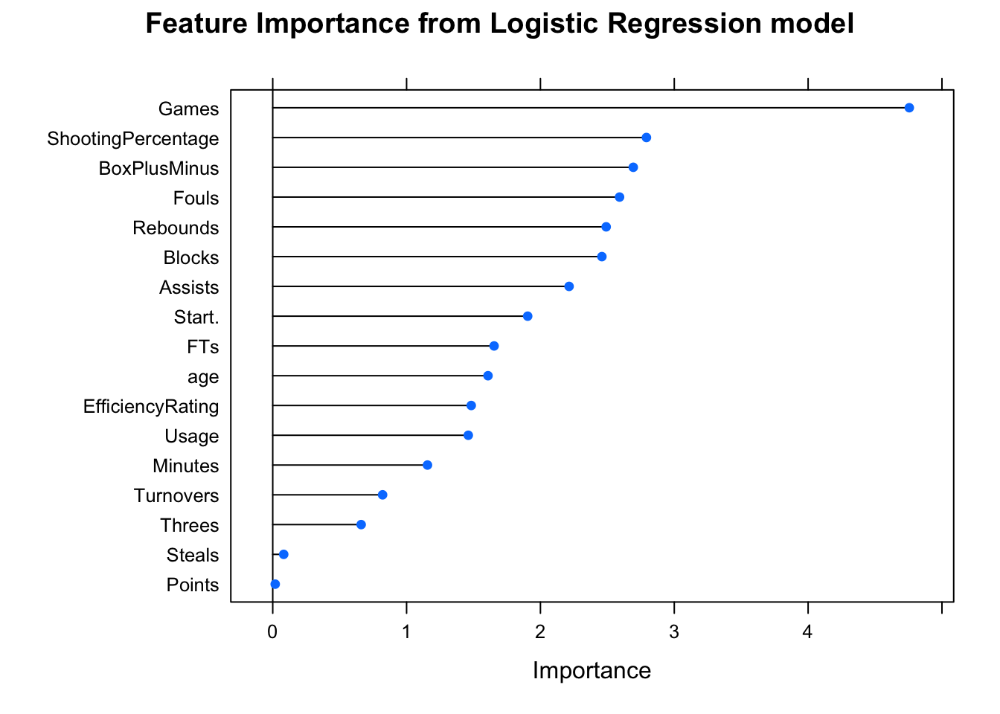
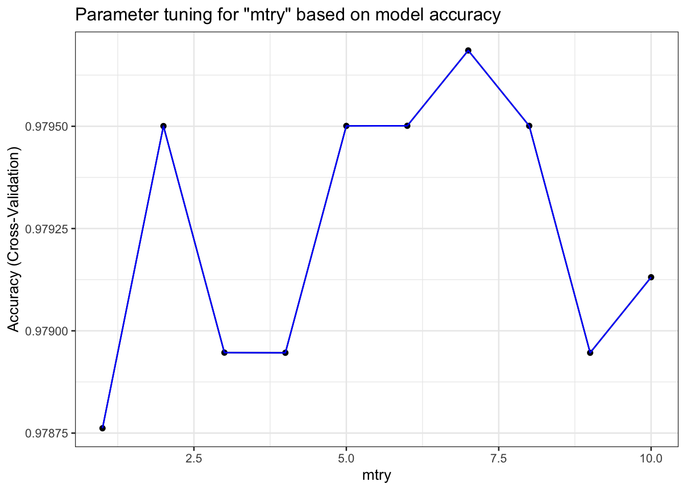
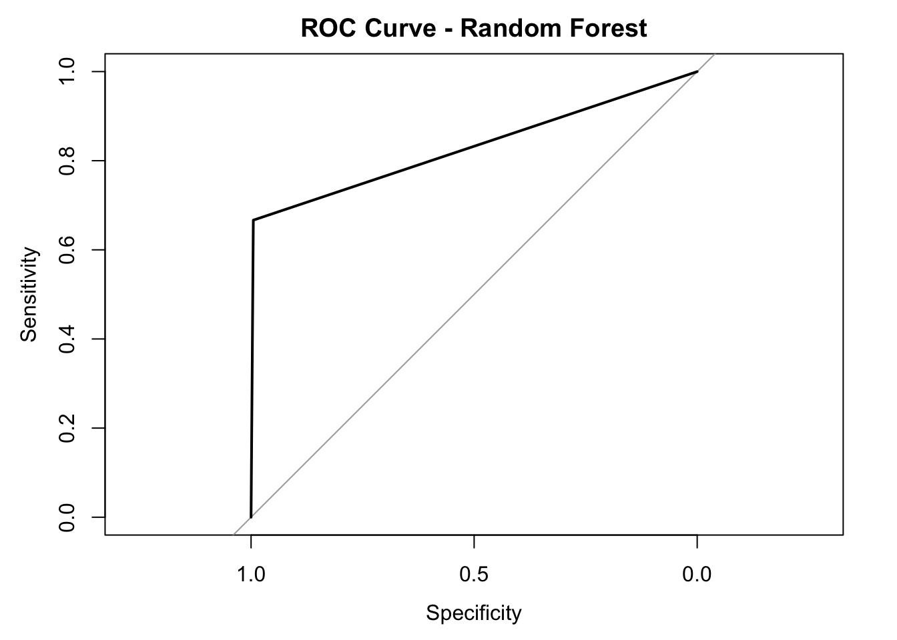
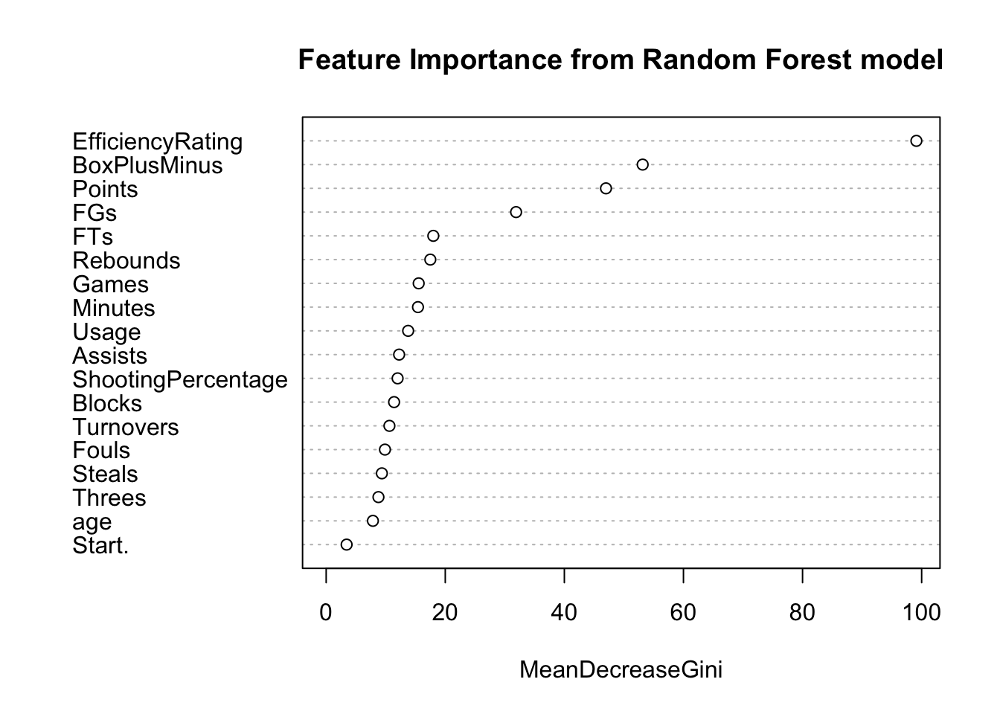

First, I decided to further remove some variables that are not important for our analysis, such as names, positions, teams and etc.
The next step was to split the whole dataset into training set and test set. I chose to reserve 25% of the data for our test set since I wanted to make sure that there are enough All-NBA players in the test set for model evaluation. Subsequently, I trained the logistic regression model along with a 5-fold cross validation and evaluated the model on the test set using a confusion matrix.
Below is the confusion matrix table that demonstrates the performance of our logistic regression model on the test set. As shown below, we obtained an overall accuracy of 98.34%, which seems to be pretty decent. However, we also obtained a low specificity since we only predicted 44 players to make the All-NBA team out of the 66 players who actually made the All-NBA teams in the test set.
## Confusion Matrix and Statistics
##
## Reference
## Prediction 0 1
## 0 1731 22
## 1 8 44
##
## Accuracy : 0.9834
## 95% CI : (0.9764, 0.9888)
## No Information Rate : 0.9634
## P-Value [Acc > NIR] : 3.884e-07
##
## Kappa : 0.7373
##
## Mcnemar's Test P-Value : 0.01762
##
## Sensitivity : 0.9954
## Specificity : 0.6667
## Pos Pred Value : 0.9875
## Neg Pred Value : 0.8462
## Precision : 0.9875
## Recall : 0.9954
## F1 : 0.9914
## Prevalence : 0.9634
## Detection Rate : 0.9590
## Detection Prevalence : 0.9712
## Balanced Accuracy : 0.8310
##
## 'Positive' Class : 0
## The AUC score of our model is also calculated and shown below:
## Area under the curve: 0.831I also plotted the ROC curve for the logistic regression model below:

To determine which features of the players play important roles in determining the All-NBA team selection, I also calculated variables’ importance and plotted the results below:

According to the plot above, we can see that some of the features that are more indicative of All-NBA selections are Games (i.e. The number of games played in that season), ShootingPercentage (i.e. Effective Field Goal Percentage; a.k.a eFG%), and BoxPlusMinus (i.e. Box Plus/Minus, which is a box score estimate of the points per 100 possessions that a player contributed above a league-average player, translated to an average team)\(^{1}\). From my perspective, these top-3 most important features make sense to me in that the general public usually regards players with high Box Plus/Minus and players who have high field goal percentages good players; and as a result, good players usually gets to play more games.
To sum up, after training a logistic regression model with 5-fold cross validation, we obtained a model with an overall accuracy of 98.34%, and the 3 most important features indicated by this model are Games, ShootingPercentage, and BoxPlusMinus.
I also applied a 5-fold cross validation to help train the model while tuning the parameter mtry of my random forest model. I tried out values from 1 to 10 for mtry and reported the results in the table below (FYI: the best value used for mtry is shown at the last line of the output below):
## Random Forest
##
## 5415 samples
## 18 predictor
## 2 classes: '0', '1'
##
## No pre-processing
## Resampling: Cross-Validated (5 fold)
## Summary of sample sizes: 4333, 4332, 4331, 4332, 4332
## Resampling results across tuning parameters:
##
## mtry Accuracy Kappa
## 1 0.9787618 0.6572906
## 2 0.9795005 0.6848226
## 3 0.9789467 0.6831630
## 4 0.9789463 0.6835770
## 5 0.9795009 0.6884816
## 6 0.9795012 0.6915311
## 7 0.9796854 0.6943301
## 8 0.9795010 0.6954058
## 9 0.9789463 0.6851561
## 10 0.9791310 0.6898859
##
## Accuracy was used to select the optimal model using the largest value.
## The final value used for the model was mtry = 7.Below is a visual demonstration of how the accuracy of this model changes with the value of mtry:

Below is the confusion matrix table that demonstrates the performance of our random forest model on the test set. We obtained an overall accuracy of 98.28%, which also seems to be pretty decent. However, we did have a low specificity since we only predicted 44 players to make the All-NBA team out of the 66 players who actually made the All-NBA teams in the test set.
## Confusion Matrix and Statistics
##
## Reference
## Prediction 0 1
## 0 1730 22
## 1 9 44
##
## Accuracy : 0.9828
## 95% CI : (0.9757, 0.9883)
## No Information Rate : 0.9634
## P-Value [Acc > NIR] : 8.662e-07
##
## Kappa : 0.7307
##
## Mcnemar's Test P-Value : 0.03114
##
## Sensitivity : 0.9948
## Specificity : 0.6667
## Pos Pred Value : 0.9874
## Neg Pred Value : 0.8302
## Precision : 0.9874
## Recall : 0.9948
## F1 : 0.9911
## Prevalence : 0.9634
## Detection Rate : 0.9584
## Detection Prevalence : 0.9706
## Balanced Accuracy : 0.8307
##
## 'Positive' Class : 0
## The AUC score of our model is also calculated and shown below:
## Area under the curve: 0.8307I also plotted the ROC curve for the random forest model below:

To determine which features of the players play important roles in determining the All-NBA teams selection, I also calculated variables’ importance and plotted the results below:

According to the plot above, we can see that some of the features that are more indicative of All-NBA selections are EfficiencyRating (i.e. Player Efficiency Rating, which sums up a player’s positive accomplishments, subtracts the negative accomplishments, and returns a per-minute rating of a player’s performance; a.k.a PER), BoxPLusMinus (i.e. Box Plus/Minus, which is a box score estimate of the points per 100 possessions that a player contributed above a league-average player, translated to an average team), and Points (i.e. The average amount of points the player scores per game in that season)\(^{1}\). From my perspective, these top-3 most important features also make sense to me in that the general public usually regards players with high Box Plus/Minus, high player efficiency rating (high PER values), and high scoring capabilities good players.
To sum up, after training a random forest model with 5-fold cross validation, we obtained a model with an overall accuracy of 98.28%, and the 3 most important features indicated by this model are EfficiencyRating, BoxPlusMinus, and Points.